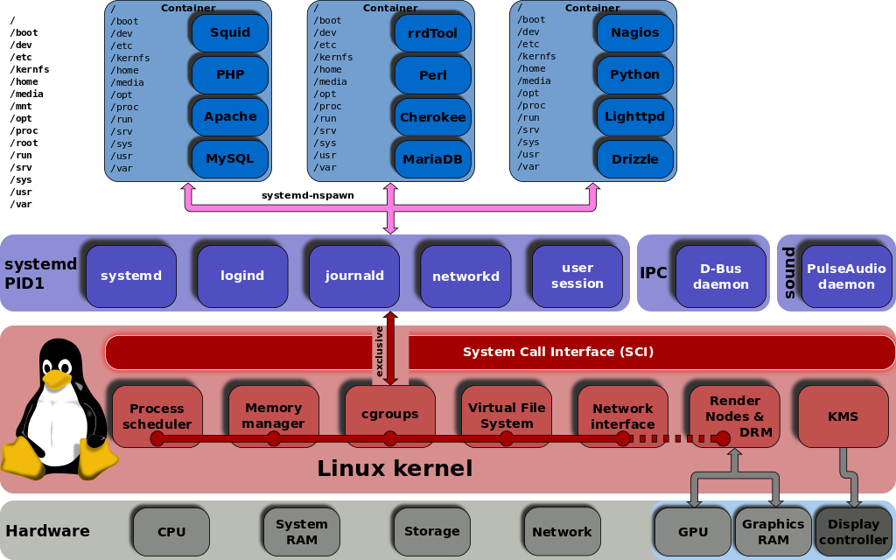

Understanding systemd
| Author: | Aaron Toponce |
|---|---|
| Email: | aaron.toponce@gmail.com |
| Date: | Jul 15, 2016 |
| URL: | http://aarontoponce.org/presents |
License
This presentation is licensed under the Creative Commons Attribution-ShareAlike license.
See http://creativecommons.org/licenses/by-sa/4.0/ for more details.
This document is licensed under the CC:BY:SA Details to the license can be found here: http://creativecommons.org/licenses/by-sa/3.0/
- The licnese states the following:
- You are free to copy, distribute and tranmit this work.
- You are free to adapt the work.
- Under the following conditions:
- You must attribute the work to the copyright holder.
- If you alter, transform, or build on this work, you may redistribute the work under the same, similar or compatible license.
- With the understanding that:
Any conditions may be waived if you get written permission from the copyright holder.
In no way are any of the following rights affected by the license:
- Your fair dealing or fair use rights;
- The author's moral rights;
- Rights other persons may have either in the work itself or in how the work is used, such as publicity or privacy rights.
For any reuse or distribution, you must make clear to others the license terms of this work. The best way to do this is with a link to the web page provided above or below.
The above is a human-readable summary of the license, and is not to be used as a legal substitute for the actual licnse. Please refer to the formal legal document provided here: http://creativecommons.org/licenses/by-sa/3.0/legalcode
Introduction
- What is systmed?
- systemd features
This presentation
- What it's not:
- Not going to "sell" systemd.
- Not going to "bash" systemd.
- What it is:
- An introduction.
- An explanation of features.
- A comparison to other init systems.
What is systemd?
- PID 1.
- Literally replaces /sbin/init.
- Designed by Lennart Poettering and Kay Sievers in 2010.
- Supervises all processes (it's the parent).
- Manages all services and resources.
- Alternative to SysV Init, Upstart, rc, etc.
systemd adoption
- Default in Fedora in 2011.
- Default in Debian, Arch, CentOS, RHEL, CoreOS, openSUSE, SLES, and Ubuntu.
- Not default in Gentoo, Slackware.
systemd myths (page 1)
- http://0pointer.de/blog/projects/the-biggest-myths.html
- monolithic
- about speed
- systmed's fast bootup is irrelevant for servers
- incompatible with shell scripts
- difficult
- not modular
- only for desktops
systemd myths (page 2)
- a result of the NIH syndrome
- not UNIX
- complex
- bloated
- Linux-only (not BSD-friendly)
- kernel-agnostic
- binary configuration files
- feature creep
systemd myths (page 3)
- forces you to do something
- impossible to run syslog
- incompatible with SysV init
- not scriptable
- unstable and buggy
- not debuggable
- Red Hat-only
- doesn't support the /usr split from /
- doesn't allow you to replace components
What does systemd offer?
- Simple dependency control (no SXX + KYY = 100)
- Service activation
- Improved logging, debugging, and profiling
- Faster startup and shutdown
- Tracking and restarting of services
- Improved resource management
systemd architecture

systemd units
- Automount- File system automount point
- Device- Kernel device file
- Mounts- File system mount point
- Paths- systemd path-based activation
- Scope- An externally created process
- Services- Standard system service
systemd units (cont.)
- Slice- A group of hierarchically organized units
- Snapshots- Saved state of the system manager
- Sockets- IPC, network socket, or a FIFO file
- Swap- Swap device or file for memory paging
- Targets- Group of system units
- Timers- systemd timer-based activation
systemd unit files
- Units are defined with unit files
- Named "name.unit_type"
- The "name" is arbitrary
Unit file dependencies
- Example: zfs-mount.service
Requires=systemd-udev-settle.service After=systemd-udev-settle.service After=zfs-import-cache.service After=zfs-import-scan.service Before=local-fs.target
- No more 00-99 ASCII order loading with K and S scripts
- Should be K+S=100, but rarely adhered to
Common Unit file options
- Description=Unit Description
- Documentation=Link to additional docs
- Wants=weaker requirements
- Conflicts=Units cannot coexist
- After=Unit must start after
- Before=Unit must start before
- Requires=Additional units required
- ExecStart=Execute this for starting
- ExecStop=Execute this for stopping
Service Activation
- Start services when needed
- Activated by Socket, Device, Path, Bus, and Timer
- Save resources
- Increased reliabality
- Transparent to the client
Parallel activation
- Faster startup and shutdown
- Five 9's is 5.26 minutes per year
- Capacity on demand (spawning networks)
Improved resource management
- Services labeled and isolated with Cgroups
- More granulated control than with nice/renice
- Balance by shares or with hard limits
- Configure multiple instances of a single service
systemd and cgroups
Kernelspace service management
- All services tracked by the kernel now
- Kernel knows every child, grandchild, etc.
- Proper reaping of defunct/zombie processes
Autorestarting
- Services DO crash
- systemd can restart the service automatically
- Socket stays open (minimize data loss)
Improved logging
- Does not need to rely on syslog (an extra service to start)
- More detail than classic syslog
- Completely optional- can rely on syslog (default)
- Improved debugging and profiling
Targets vs Runlevels
| Runlevel | Target | Symlink Target |
|---|---|---|
| 0 | poweroff.target | runlevel0.target |
| 1 | rescue.target | runlevel1.target |
| 2 | multi-user.target | runlevel2.target |
| 3 | multi-user.target | runlevel3.target |
| 4 | multi-user.target | runlevel4.target |
| 5 | graphical.target | runlevel5.target |
| 6 | reboot.target | runlevel6.target |
Target Administration
# systemctl get-default multi-user.target # systemctl set-default graphical.target rm '/etc/systemd/system/default.targot ln -s '/usr/lib/systemd/system/graphical.target \ /etc/systemd/system/graphical.target' # systemctl isolate graphical.target
Target Administration cont.
# systemctl list-units --type target UNIT LOAD ACTIVE SUB DESCRIPTION basic.target loaded active active Basic System cryptsetup.target loaded active active Encrypted Volumes getty.target loaded active active Login Prompts graphical.target loaded active active Graphical Interface local-fs-pre.target loaded active active Local File Systems (Pre) local-fs.target loaded active active Local File Systems
Halting
# file /sbin/reboot /sbin/reboot: symbolic link to /bin/systemctl
| Old command | New command | Description |
|---|---|---|
| halt | systemctl halt | Halts the system |
| poweroff | systemctl poweroff | Powers off the system |
| reboot | systemctl reboot | Reboots the system |
File Locations
- In order of preference:
- Local: /etc/systemd/system/
- Run-time: /run/systemd/system/
- Packages: /usr/lib/systemd/system/
Example: RTL-SDR TRNG
[Unit] Description=RTL-SDR Hardware Random Number Generator Documentation=https://github.com/pwarren/rtl-entropy/ [Service] ExecStart=/usr/local/bin/rtl_entropy -b -f 74M -e ExecStop=/usr/bin/pkill rtl_entropy ExecStopPost=/bin/rm -f /run/rtl_entropy.fifo /run/rtl_entropy.pid PIDFile=/run/rtl_entropy.pid [Install] WantedBy=multi-user.target
Installing the RTL-SDR TRNG Service
# vim /etc/systemd/systemd/rtl-entropy.service # systemctl daemon-reload # systemctl start rtl-entropy.service # systemctl status rtl-entropy.service
Using SysV init service(8)
# service rtl-entropy restart [ ok ] Restarting rtl-entropy: rtl-entropy # service rtl-entropy stop [ ok ] Stopping rtl-entropy : rtl-entropy # service rtl-entropy start [ ok ] Starting rtl-entropy : rtl-entropy
Using systemctl(8)
# systemctl restart rtl-entropy # systemctl stop rtl-entropy # systemctl start rtl-entropy # systemctl status rtl-entropy
Using systemctl(8) cont.

systemctl(8) vs service(8)
# service --status-all [ + ] acpid [ + ] atd [ ? ] binfmt-support [ ? ] bitlbee [ - ] bootlogd.dpkg-bak [ - ] bootlogs [ - ] bootmisc.sh ...
systemctl(8) vs service(8)
# systemctl --type service --state active UNIT LOAD ACTIVE SUB DESCRIPTION accounts-daemon.service loaded active running Accounts Service acpid.service loaded active running ACPI event daemon apache2.service loaded active running LSB: Apache2 web server atd.service loaded active running Deferred execution schedu autofs.service loaded active running Automounts filesystems on avahi-daemon.service loaded active running Avahi mDNS/DNS-SD Stack console-setup.service loaded active exited Set console font and keym ...
systemctl(8) vs chkconfig(8)
# chkconfig rsyslog on # chkconfig --list rsyslog rsyslog 0:off 1:off 2:on 3:on 4:on 5:on 6:off # chkconfig rsyslog off
systemctl(8) vs chkconfig(8)
# systemctl enable rsyslog.service systemctl enable docker.service Synchronizing state of docker.service with SysV service script with /lib/systemd/systemd-sysv-install. Executing: /lib/systemd/systemd-sysv-install enable docker insserv: warning: current start runlevel(s) (empty) of script `docker' overrides LSB defaults (2 3 4 5). insserv: warning: current stop runlevel(s) (0 1 2 3 4 5 6) of script `docker' overrides LSB defaults (0 1 6). # ls /lib/systemd/system/docker.service /lib/systemd/system/docker.service
systemctl(8) vs chkconfig(8)
# chkconfig --list acpid 0:off 1:off 2:on 3:on 4:on 5:on 6:off atd 0:off 1:off 2:on 3:on 4:on 5:on 6:off binfmt-support 0:off 1:off 2:on 3:on 4:on 5:on 6:off bitlbee 0:off 1:off 2:on 3:on 4:on 5:on 6:off bootlogd.dpkg-bak 0:off 1:off 2:off 3:off 4:off 5:off 6:off bootlogs 0:off 1:on 2:on 3:on 4:on 5:on 6:off bootmisc.sh 0:off 1:off 2:off 3:off 4:off 5:off 6:off S:on cgmanager 0:off 1:off 2:on 3:on 4:on 5:on 6:off cgproxy 0:off 1:off 2:on 3:on 4:on 5:on 6:off ...
systemctl(8) vs chkconfig(8)
# systemctl list-unit-files --type service UNIT FILE STATE accounts-daemon.service enabled acpid.service disabled alsa-restore.service static alsa-state.service static alsa-utils.service masked apache-htcacheclean.service generated apache2.service generated apt-daily.service static ...
More systemctl(8)
- List dependencies by target:
# systemctl list-dependencies multi-user.target --no-pager ● ├─unscd.service ● ├─zfs-zed.service ● ├─basic.target ● │ ├─-.mount ● │ ├─alsa-restore.service ● │ ├─alsa-state.service ● │ ├─tmp.mount ● │ ├─paths.target ● │ │ └─acpid.path ...
More systemctl(8)
- Shell subcommand completion:
# systemctl <tab><tab> cancel -- Cancel all, one, or more jobs cat -- Show the source unit files and drop-in daemon-reexec -- Reexecute systemd manager daemon-reload -- Reload systemd manager configuration default -- Enter system default mode disable -- Disable one or more unit files edit -- Edit one or more unit files emergency -- Enter system emergency mode enable -- Enable one or more unit files
Additional system(8) commands
# systemd-<tab><tab> systemd-analyze systemd-machine-id-setup systemd-ask-password systemd-notify systemd-cat systemd-path systemd-cgls systemd-resolve systemd-cgtop systemd-run systemd-delta systemd-socket-activate systemd-detect-virt systemd-stdio-bridge systemd-docker systemd-sysusers systemd-escape systemd-tmpfiles systemd-hwdb systemd-tty-ask-password-agent systemd-inhibit
Learning journalctl(8)
- Timestamps converted to local timezone
- All logged data is shown, including rotated logs
# journalctl -- Logs begin at Sat 2016-07-09 23:38:15 MDT, end at Fri 2016-07-15 08:22:41 MDT Jul 09 23:38:15 eightyeight icinga2[2063]: [2016-07-09 23:38:15 -0600] warning/P Jul 09 23:38:15 eightyeight icinga2[2063]: [2016-07-09 23:38:15 -0600] warning/P Jul 09 23:38:15 eightyeight icinga2[2063]: [2016-07-09 23:38:15 -0600] warning/P Jul 09 23:39:01 eightyeight CRON[19643]: pam_unix(cron:session): session opened Jul 09 23:39:01 eightyeight CRON[19644]: (root) CMD ( [ -x /usr/lib/php/session Jul 09 23:39:01 eightyeight CRON[19643]: pam_unix(cron:session): session closed Jul 09 23:39:04 eightyeight sks[1030]: 2016-07-09 23:39:04 <recon as client> err
journald logs are not persistent
- Non-persistent by default
- Stored in a small ring buffer or in memory
- Stored in /run/log/journal/ by default
# ls /run/systemd/journal dev-log= flushed kernel-seqnum socket= stdout= streams/ syslog=
- To enable persistence:
# mkdir /var/log/journal/ # systemctl restart systemd-journal
More journalctl(8)
- View the most recent logs (use -f to follow):
# journalctl -n 10
- Specify verbosity:
# journalctl -o <tab> cat json-pretty short-iso verbose export json-sse short-monotonic json short short-precise
More journalctl(8)
- Filter by priority
# journalctl -p err
- Filter by time and priority
# journalctl -p err --since "2016-7-14" --until "2016-7-15"
- Advanced filtering by:
- field
- UUID
- unit
- ...
Autorestarting services
# grep start /lib/systemd/system/ssh.service Restart=on-failure RestartPreventExitStatus=255 RestartSec=42
- If SSH dies, it will autorestart after 42 seconds
Review
- Replaces /sbin/init
- Highly featured, very powerful
- New set of commands and functionality
- New journal logging
Fin
- Comments, questions, rude remarks?